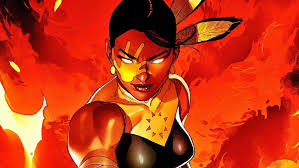
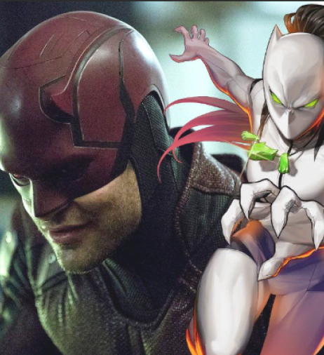

Marvel revela maneira de usar as Joias do Infinito sem a posse das pedras
Homem-Aranha | O maior mistério do desenho segue sem resposta

Deadpool 3 vai ter muitas participações surpresas, revela ator
Eco | Produtora fala sobre as dificuldades e acertos da série da Marvel

Blade ganha vantagem absurda com um novo superpoder
As Marvels | Novo filme do MCU já tem data para chegar ao Disney+
Ator da Marvel quer retornar ao MCU como Doutor Destino
Eco tem uma conexão cósmica diretamente ligada aos X-Men
Homem de Ferro tem armadura tão incrível que os vilões preferem evitar

Hulk se redime de vexame contra Thanos no MCU em revanche nas HQs

Homem de Ferro | Veja os segredos da nova armadura antimagia Mark 72

Quarteto Fantástico finalmente tem seu elenco revelado
Deadpool & Wolverine | Por que fãs acreditam que filme terá 2 Wolverines?

Quarteto Fantástico confirma segredo nojento sobre Reed Richards
Subtrama do Homem-Aranha de Tobey Maguire vira canônica nas HQs

X-Men '97 vai fazer parte do MCU?

Fera se torna vilão e é caçado pelos X-Men em reviravolta chocante
Demolidor pode ganhar spin-off focado em heroína desconhecida da Marvel